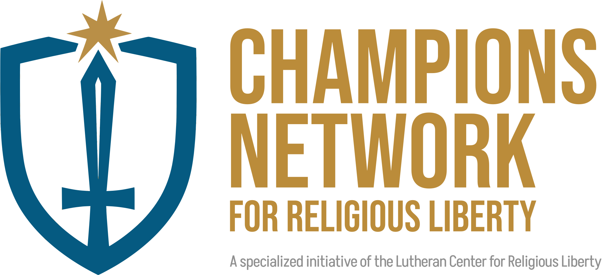
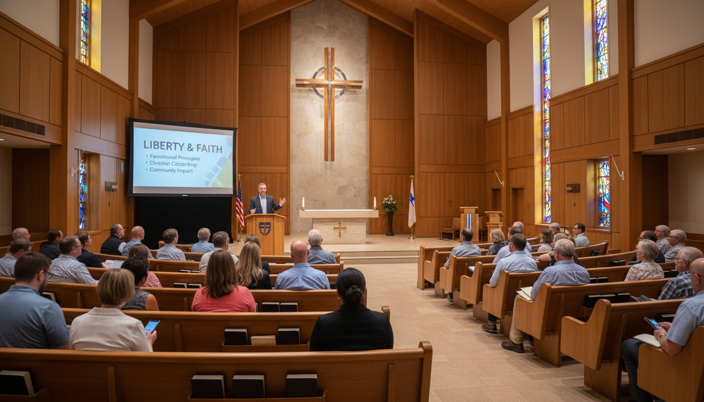
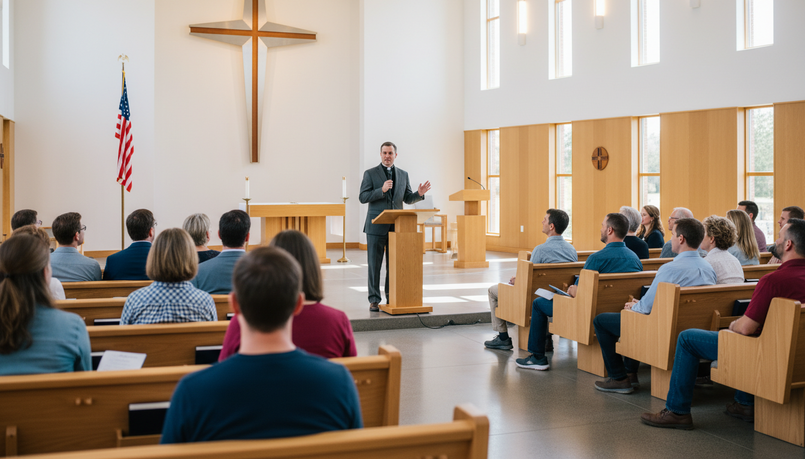

Private Preview
This site is password protected.
This site is password protected.
"Congress shall make no law respecting an establishment of religion, or prohibiting the free exercise thereof…" — First Amendment
Network — An Initiative of LCRL
Educating, Inspiring & Encouraging Two-Kingdom Laity to engage American culture, defend the First Amendment, and proclaim the LORD's saving Word.
"For this is the will of God, that by doing good you should put to silence the ignorance of foolish people. Live as people who are free… Fear God. Honor the Emperor."
— 1 Peter 2:15–17

Why We ExistOur culture continues to chip away at America's most basic religious liberties, despite the protections of the First Amendment. For the sake of our communities and the Church, we must engage — on God's terms.
The systematic re-definition of marriage and the re-gendering of humans contrary to God's created order.
The cheapening and limiting of human life to pragmatic standards, denying the image of God in every person.
A dangerous trend where government seeks to replace both God and parental authority in American life.
The rise of policies and cultural norms that penalize biblical worldviews and Christian conviction as "hate speech."
The Champions Network is a vibrant community learning, growing, praying, and challenging one another to engage their local communities with a Two-Kingdom set of principles.
The Champions Network is built for everyday believers — not politicians or professional activists. Congregants, citizens, and people who love the LORD and the liberties that He alone can provide.
Our mission is to inspire and equip individuals dedicated to making a difference in their congregations, schools, and communities. We seek to put our temporal liberties to work for the greater, eternal liberties of the Gospel for all.
Champions are individuals committed to speaking into the culture and the church the Two-Kingdom principles that uphold religious liberty, sanctity of life, and educational freedom — echoing the voice of God that both preserves and saves.
The key distinction: advocates engage with measured, truth-filled conviction motivated by love — not reactionary combat or partisan politics.
Champions who build bridges into the community and into community organizations, local government, local agencies, state and federal representatives — as God blesses us accordingly.
Connectors network with other Champion Chapters, state legislators, and federal representatives through LCRL's connections on Capitol Hill.
God engages the world in two distinct ways. Understanding this is the foundation of everything we do.
God works through secular government, reason, and law to curb evil, maintain civil peace, and preserve the temporal blessings He has given us.
God works through the Church and the Gospel to save souls through faith in Christ — the ultimate purpose for defending liberty in the first place.
Two Kingdoms, yet one mission — to bless the world now and forever.
To ensure advocacy is grounded in maturity rather than reactionary activism, the LCRL utilizes a tiered journeyman system. The calling continues until Jesus returns.
Each group in our network is called a Champions Chapter. We provide educational resources, digital delivery systems, discussion guides, and regular communication support — so that many hands make for light work.
Seeking to be useful in God's hands, Champions seek:
The Champions Network focuses its educational resources and community engagement around four core areas where religious liberty is most directly threatened.
Defending every Christian's First Amendment right to live, work, and worship according to their faith without government penalty.
Upholding marriage as God's institution and defending the family as the cornerstone of both Church and civic society.
Affirming that every human being is made in the image of God, opposing the cheapening of life to pragmatic or utilitarian standards.
Protecting parental rights and school choice, opposing a public education system increasingly hostile to the Judeo-Christian worldview.
Affiliation with the Champions Network typically begins with a high-impact introductory event. Choose the format that works best for your congregation.

A 60–90 minute interactive presentation on constitutional protections — perfect for a Sunday worship slot, adult Bible class, or weeknight meeting. Introduces the Champions Network and foundational First Amendment protections for Christians.
60–90 minute virtual or in-person interactive presentation covering foundational principles of religious liberty and the Champions Network.
Presenter also offers a Sunday sermon and Bible study on the biblical roots of religious freedom — maximizing the visit to your congregation.
A Saturday morning workshop (10:00 am – 2:00 pm) featuring three focused sessions with Q&A and lunch. Covers why Christians engage culture, religious liberty principles, and cultural interaction for church mission.
Two-Kingdom discipleship — how God engages the world to preserve it and to save it.
A Two-Kingdom exercise in the American context: concerns, trends, victories, and engagements.
The LCRL and You — how to join the Champions Network and begin the five-year journey.
A comprehensive Champions Discovery Weekend — LCRL staff conduct a Saturday morning workshop and lead Sunday preaching and Bible classes. The most impactful way to launch Champions Network engagement in your congregation.
9:30 am registration, coffee & donuts · 10:00 am–2:00 pm with Q&A and lunch. Three full sessions led by Rev. Dr. Gregory Seltz and Rev. Mark Frith.
Presenter leads Sunday sermon and adult Bible class on religious freedom's biblical roots, maximizing congregational reach.
Each Champions Chapter is led by 4–5 Chapter Facilitators — ensuring the workload is shared and many hands make for light work in leading the Chapter.
Leads and coordinates the overall chapter, ensuring sessions run smoothly and participants stay engaged.
Leads the chapter in prayer, grounding all engagement in humility and dependence on the Holy Spirit.
Creates a welcoming environment where members feel at home, encouraged to participate and return.
Manages outreach, coordination, and connectivity with other chapters and the broader LCRL network.
The chapter's pastor provides theological grounding, accountability, and support for all chapter activities.
Membership in the Champions Network is open to anyone willing to commit to a Champions Chapter for at least one year. Invite an LCRL Staff Member to your church for a Champions Discovery Weekend to get started.

A distinguished theologian and evangelical leader who provides input, education, advice, advocacy, and resources in the areas of life, marriage, education, and religious liberty — establishing partnerships in Washington, D.C. for the sake of our churches and schools.

Guides, supports, and empowers church leaders with the tools needed to reach their full potential as Two-Kingdom Citizens. Rev. Frith manages practical recruitment and church support for the Champions Network across America.
Join Rev. Dr. Gregory Seltz and Rev. Mark Frith for a Champions Discovery Weekend near you. Featuring workshops, Bible classes, and community engagement training.
A full Champions Discovery Weekend featuring three sessions, Q&A, and lunch. Sunday preaching and Bible class included.

Liberty Lecture60–90 minute interactive presentation on constitutional protections for Christians in American public life. Virtual option available.
A Saturday morning primer covering Two-Kingdom foundations, the American experiment, and how to launch a Champions Chapter in your congregation.
Ready to explore bringing the Champions Network to your congregation? Rev. Mark Frith will be in touch within 48 hours.
— or —
Book Directly on Calendly
Dr. Gregory Seltz is a distinguished theologian and evangelical leader serving as Executive Director of the Lutheran Center for Religious Liberty in Washington, D.C.
He provides input, education, advice, advocacy, and resources in the areas of life, marriage, education, and religious liberty — establishing partnerships and resources in our nation's Capital for the sake of our churches, schools, universities, and seminaries.
A sought-after speaker and preacher, Dr. Seltz brings the Two-Kingdom framework to life for congregations across the country through Liberty Weekends and Champions Network events.
Rev. Mark T. Frith serves as National Director of the Champions for Religious Liberty Network, managing practical recruitment, church support, and day-to-day leadership of the growing network across America.
Mark guides, supports, and empowers church leaders with the tools needed to reach their full potential as Two-Kingdom Citizens. He works directly with pastors and congregations to launch Champions Chapters, facilitate Liberty Lectures and Weekends, and connect local champions to the national LCRL network.
Contact Rev. Frith directly: